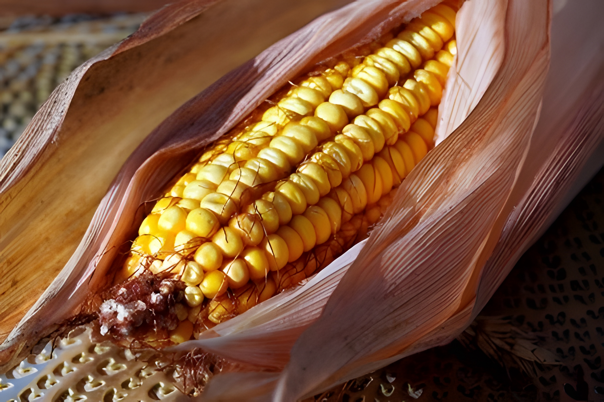

The majority of corn grown in the U.S. is dent corn, also called field corn. It is mainly used for livestock feed. It is called dent corn because it has a dent in the kernel. This type of corn is not eaten fresh and is harvested when the kernels are dry.
